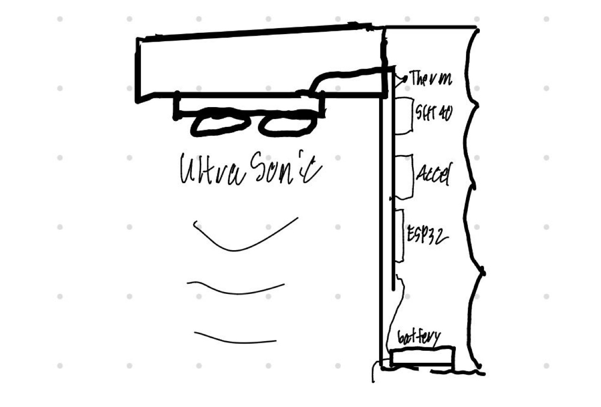
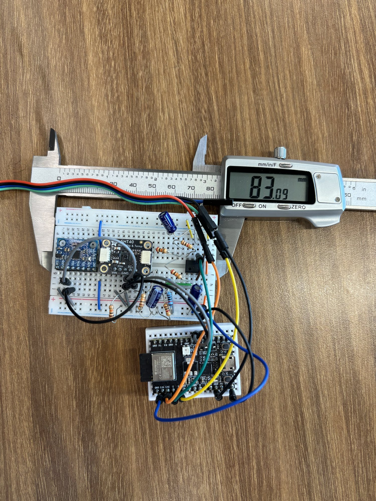
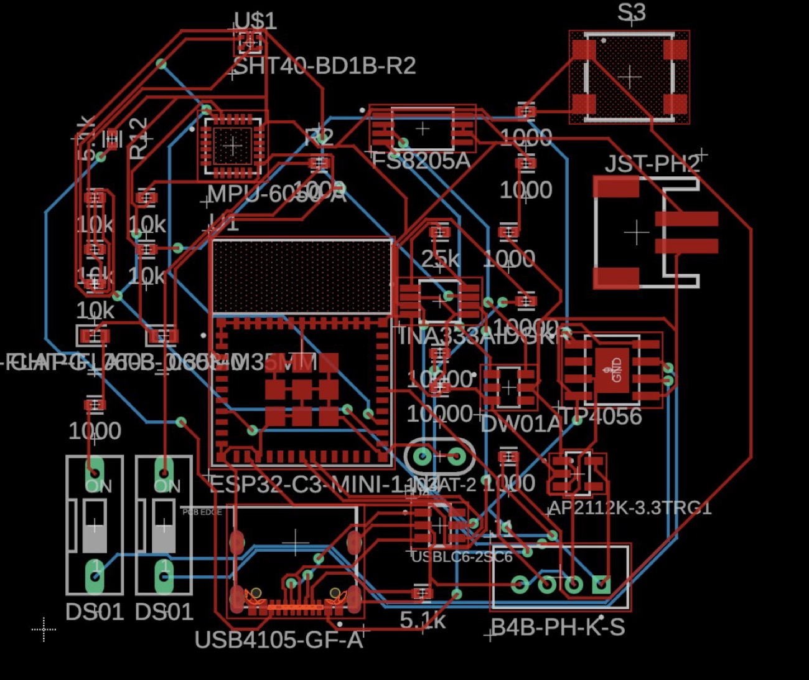

A hydration tracker with five sensors, a custom analog front end, a two-layer PCB, and a printed enclosure — designed, fabricated, and debugged end to end.

The idea. Ultrasonic firing down through the water; thermistor, SHT40, accelerometer, ESP32 and battery stacked in the side column.The object. Printed housing, clamped between bottle and lid.
Role
Solo — hardware, firmware, CAD
Timeline
10 weeks
Context
ELEE 4230, Sensors & Transducers
Status
Built and working
WhyI get migraines. They're linked to dehydration.
That's the whole reason this exists. Not a hypothetical user, not a market gap — a problem I have, that I can measure, and that hardware can plausibly help with. If I drink enough water I get fewer migraines. The difficulty is that I don't notice I've stopped drinking until it's already too late.
So: a bottle that notices for me.
Building it well meant confronting the fact that each sensor demands a different kind of care:
A thermistor is a resistance, not a voltage. It needs a bridge and a gain stage before an ADC can do anything useful with it — and its response is nonlinear, so a straight-line fit is a lie.
An ultrasonic rangefinder inside a bottle is a hostile environment — reflections, condensation, a surface that moves whenever you do.
An IMU gives you raw acceleration. "A sip happened" is an inference, not a reading.
Five sensors on one microcontroller makes bus arbitration and timing a design constraint, not an afterthought.
The premise is simple enough that nothing lets you hide sloppy engineering behind it. That was the appeal.
Analog front endGetting a usable signal out of a thermistor.
A thermistor's resistance change is small, and reading it directly with the ESP32's ADC throws most of the resolution away. Instead I put it in one leg of a Wheatstone bridge, so the output is a differential voltage that sits near zero at the balance point and swings with temperature.
That differential signal goes into an INA121P instrumentation amplifier at a gain of 2 — the through-hole DIP part, chosen because it breadboards — high input impedance, high CMRR, gain set by a single external resistor. The in-amp rejects the common-mode noise the bridge picks up and hands the ADC a signal that actually uses its range.
The thermistor is a Semitec 103AT-2, and its resistance-to-temperature relationship is famously nonlinear. Rather than fake it with a linear fit, I linearise it properly with the Steinhart-Hart equation — three coefficients, good to a fraction of a degree across the range that matters.
When the design moved to a PCB, the INA121P became an INA333 — same job, surface-mount package. Prototype with the part you can hold; ship the part that fits the board.
Why this matters: this is the difference between a project that reads a sensor and a project that conditions a signal. The bridge sets up the measurement; the in-amp makes it survivable. Everything downstream — the ADC bits, the calibration curve, the accuracy claim — depends on getting this stage right.
The sensor I deliberately didn't use
The obvious way to measure water level is capacitive rods — two electrodes in the liquid, read the capacitance. It's cheap, it's linear, and it's what most designs reach for.
I rejected it. The rods have to sit in the water I'm going to drink, and in a bottle I have to clean regularly. So I took the A02YYUW ultrasonic instead — it measures the surface from above, touching nothing. It's a harder sensor to work with (reflections, condensation, a moving surface, outlier spikes that need a median filter to kill) and I chose it anyway, because a measurement that compromises the thing being measured isn't a measurement worth having.
This is the tradeoff I'd want to be asked about. The easy sensor was the wrong sensor. Choosing the harder one — and then doing the filtering work to make it behave — is the actual engineering.
The remaining sensors are digital and comparatively well-behaved: an SHT40 for ambient temperature and humidity over I²C, an MPU-6050 IMU for orientation and motion, and an A02YYUW ultrasonic sensor for fill level. Each gets its own filter chosen to match its failure mode — Kalman on the noisy analog channel, EMA for smoothing slow drift, and a median filter to kill the ultrasonic's outlier spikes. One filter for all five sensors would have been the lazy answer and a worse one.
PrototypeMeasure the circuit, then design around it.
Before any CAD, I built the whole signal chain on a breadboard and got it working — then put calipers on it and measured the footprint.
That's the order the housing depended on. The enclosure was designed around the real, measured dimensions of a circuit I'd already proven, rather than a shape I hoped the electronics would fit inside. Doing it the other way round is how you end up with a beautiful printed part and a board that won't go in it.

The full signal chain on a breadboard — ESP32-C3, SHT40, MPU-6050, and the instrumentation amp — measured with calipers so the housing could be modelled around it.
BoardThe part nobody looks at: power.
Two-layer board, laid out in EasyEDA, fabricated by JLCPCB, built around an ESP32-C3-MINI-1.
The sensors get the attention, but the power path is where a portable device actually lives or dies. Mine is a complete chain, and every link is there for a reason:
USB-C in (USB4105-GF-A) — with 5.1kΩ CC pull-downs, without which a USB-C host will not deliver current at all. It's the single most common mistake on a first USB-C board.
USBLC6-2SC6 — ESD protection on the data lines. A port a human touches is a port that will eventually get zapped.
TP4056 — LiPo charge management.
DW01A + FS8205A — battery protection: over-charge, over-discharge, over-current. A lithium cell in a bottle I carry around is not a place to skip this.
AP2112K-3.3 — regulation down to the 3.3V rail the ESP32 and sensors run on.
Why this matters more than it looks: most student boards are a microcontroller with a USB cable hanging off it. This one charges, protects, and regulates a lithium battery safely, and negotiates USB-C properly. None of that is glamorous and all of it is the difference between a demo and a device.

Layout. ESP32-C3-MINI-1 centre; analog front end and instrumentation amp to the right of it; the USB-C, charge, protection and regulation chain along the bottom edge.
[Zack — replace this pull-quote with one true sentence about a real mistake on this board. If nothing went wrong, delete it.]
The housing was modelled in Fusion 360 and printed — the black clamp you can see at the top of this page, designed to sit between the bottle and the lid.
FirmwareTurning readings into something worth acting on.
The ESP32-C3 SuperMini polls the sensor set, applies the calibration curve to the conditioned thermistor signal, and filters the IMU stream to distinguish a genuine sip from the bottle being knocked over or carried.
It then does the thing that makes the device more than a datalogger: it pulls current local conditions from the Open-Meteo API, scales an expected intake against temperature and humidity, compares that to what you've actually drunk, and pushes a notification through ntfy.sh when you're behind. The hydration target is a function of the weather, not a fixed number.
Where it's goingV2: make it cheaper, and make it fit any bottle.
V1 works. It's also expensive, complicated, and welded to one specific bottle — which quietly defeats the point. I wanted something I could actually use every day, and a bespoke instrumented bottle isn't that. It's a demo.
So I'm rebuilding it as something closer to a keychain hydration counter: small, cheap, bottle-agnostic. Clip it to whatever bottle you're carrying.
The scope cut is the point. Five sensors was a good exercise and a bad product. Almost all the value sits in one question — have I drunk enough today? — and answering that doesn't need a Wheatstone bridge, an instrumentation amp, and an ultrasonic rangefinder. Stripping the build back to the sensor that actually earns its place is harder than adding four more, and it's the version I'd actually carry.
What carries over, and what doesn't
Keep: motion-based sip detection. The IMU was always the sensor doing the real work.
Reconsider: the analog front end. It's the part I'm proudest of and it may not survive contact with the cost target. Being able to say that out loud is part of the job.
Fix: the form factor. Bottle-agnostic was always the goal — I just built the opposite of it first.
[Zack — one more section to write.] Three specific things that went wrong on the V1 board. A layout decision you'd reverse, a part you'd swap, a measurement that didn't match the simulation. Naming your own mistakes is the one thing a template can't fake.